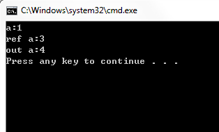

C# Methods
A method is a code block that organizes a set of related statements together to perform a specific task. It is the implementation in C# ofCode ReuseandLogic encapsulationThe core mechanism. Every C# program has at least oneMainA method serves as the program entry point.
Using a method requires two steps:Define methodandCall method。
1. Defining methods
The basic syntax for defining a method in C# is as follows:
<access modifier> <return type> <method name>(<parameter list>)
{
method body
}
A method consists of the following elements:
- Access modifiers(Access Modifier): Controls the visibility of the method, such as
public、private、protected、internal。 - Return Type(Return Type): The data type of the method's return value. If the method does not return any value, use
void。 - method name(Method Name): The unique identifier of the method, following PascalCase naming conventions (e.g.
FindMax、GetUserName）。 - Parameter list(Parameter List): The inputs that the method receives, enclosed in parentheses. Parameters are optional; a method can have no parameters.
- method body(Method Body): Contains the code that implements the functionality, enclosed in curly braces
{}Surround.
The following figure shows the complete structure of a method:
1.1 First method example
The following defines aFindMaxA method that takes two integers and returns the larger one:
Example
namespace MethodDemo
{
class NumberHelper
{
// Define a method that takes two ints and returns the larger one
public int FindMax(int num1, int num2)
{
if (num1 > num2)
return num1;
else
return num2;
}
static void Main(string[] args)
{
// Create an object and call the method
NumberHelper helper = new NumberHelper();
int result = helper.FindMax(100, 200);
Console.WriteLine($"The maximum value is: {result}"); // The maximum value is: 200
}
}
}
The method invocation process:
Cross-class call:As long as the method is declared as
public, then it can be called from other classes by creating an instance. This is the foundation of code reuse in object-oriented programming.
2. Parameter passing methods
C# provides three ways to pass parameters to methods. Their core difference lies inWhether to share memory：
| Method | Keywords | Behavior | Typical scenarios |
|---|---|---|---|
| Pass by value | (none) | Copies the parameter value; modifications inside the method do not affect the original variable. | Most method calls (default) |
| Pass by reference | ref |
Passing a reference to the variable; modifications inside the method will change the original variable. | Need to modify external variables (e.g., swapping values) |
| Output parameter | out |
Similar to ref, but the method must assign a value, and the variable does not need to be initialized before the call. | The method needs to return multiple values |
2.1 Passing by value (default)
Passing by value is the default. The value of the argument will beCopygiven to the parameter; modifications to the parameter inside the method will not affect the original variable:
Example
namespace ParameterDemo
{
class Program
{
// Pass by value: x and y are copies of a and b
public void Swap(int x, int y)
{
int temp = x;
x = y;
y = temp;
Console.WriteLine($" Inside method: x={x}, y={y}"); // Swap successful
}
static void Main(string[] args)
{
var p = new Program();
int a = 100, b = 200;
Console.WriteLine($Before call: a={a}, b={b});
p.Swap(a, b);
Console.WriteLine($After call: a={a}, b={b}); // a, b have not changed!
}
}
}
调用前：a=100, b=200 方法内：x=200, y=100 调用后：a=100, b=200
2.2 Passing by reference (ref)
UsagerefThe keyword passes the variable'sReference(memory address); modifications to the parameter inside the method will directly affect the original variable. Note that the keyword must also be added when calling.ref：
Example
namespace ParameterDemo
{
class Program
{
// Pass by reference:x and y straightJieReference a、b ofMemory
public void Swap(ref int x, ref int y)
{
int temp = x;
x = y;
y = temp;
}
static void Main(string[] args)
{
var p = new Program();
int a = 100, b = 200;
Console.WriteLine($Before call: a={a}, b={b});
p.Swap(ref a, ref b); // When calling, you must also add ref
Console.WriteLine($After call: a={a}, b={b}); // Swap successful!
}
}
}
调用前：a=100, b=200 调用后：a=200, b=100
The difference between ref and out:
refRequires the variable before passingMust be already initialized；outThen it is not required, but inside the methodThe out parameter must be assigned a valuebefore it can be used.
2.3 Output parameters (out)
outParameters allow the method toReturn multiple values. AndrefThe difference is that the variable does not need to be initialized before the call, but the method must assign a value to it:
Example
namespace ParameterDemo
{
class Program
{
// out parameter: the method is responsible for assignment
public void GetValues(out int x, out int y)
{
Console.Write("Please enter the first value:");
x = Convert.ToInt32(Console.ReadLine());
Console.Write("Please enter the second value:");
y = Convert.ToInt32(Console.ReadLine());
// Note: All out parameters must be assigned before the method ends, otherwise a compilation error occurs.
}
// Practical example: TryParse pattern
public bool TryDivide(int a, int b, out double result)
{
if (b == 0)
{
result = 0;
return false; // Division by zero
}
result = (double)a / b;
return true;
}
static void Main(string[] args)
{
var p = new Program();
// out parameters do not need initialization
int a, b;
p.GetValues(out a, out b);
Console.WriteLine($"a={a}, b={b}");
// TryParse pattern
if (p.TryDivide(10, 3, out double res))
Console.WriteLine($"10 / 3 = {res:F2}"); // 3.33
}
}
}
Since C# 7.0, you can, when calling,Inline declarationout variables make the code more concise:
// C# 7.0+ 内联声明
if (int.TryParse("123", out int number))
Console.WriteLine($"解析成功：{number}");
3. Recursive methods
Recursion refers to a methodCall itselfEach recursive method requires two elements:
- Base condition(Base Case): The condition that terminates recursion, preventing infinite recursion.
- Recursive step(Recursive Step): Decomposes the problem into smaller subproblems.
Classic example — calculating factorial $$n! = n \times (n-1)!$$:
Example
namespace RecursionDemo
{
class Program
{
// Recursively compute factorial
public int Factorial(int n)
{
// Base condition: 0! = 1, 1! = 1
if (n <= 1)
return 1;
// Recursive step: n! = n × (n-1)!
return n * Factorial(n - 1);
}
static void Main(string[] args)
{
var p = new Program();
Console.WriteLine($"6! = {p.Factorial(6)}"); // 720
Console.WriteLine($"7! = {p.Factorial(7)}"); // 5040
Console.WriteLine($"8! = {p.Factorial(8)}"); // 40320
}
}
}
6! = 720 7! = 5040 8! = 40320
The expansion process of recursive calls:
Factorial(4) = 4 × Factorial(3) = 4 × 3 × Factorial(2) = 4 × 3 × 2 × Factorial(1) = 4 × 3 × 2 × 1 = 24
Note:When recursion depth is too large, it may cause
StackOverflowExceptionFor performance-sensitive scenarios, consider using a loop instead.
4. More features of methods
4.1 Default parameters and named parameters
C# allows parameters to be set withDefault valueyou can omit these parameters when calling. Combined withNamed parametersyou can also skip some parameters and only specify the ones that follow:
Example
namespace MethodFeatures
{
class Program
{
// Default parameter: power defaults to 2
static double Power(double baseNum, int power = 2)
{
double result = 1;
for (int i = 0; i < power; i++)
result *= baseNum;
return result;
}
// Multiple default parameters
static void PrintInfo(string name, int age = 18, string city = "Unknown")
{
Console.WriteLine($"{name}, {age} years old, {city}");
}
static void Main(string[] args)
{
// Using default parameters
Console.WriteLine(Power(3)); // 9.0 (using default power=2)
Console.WriteLine(Power(3, 3)); // 27.0
// Named arguments: skip age, specify only city
PrintInfo(Xiaoming, city: "Beijing");
// Output: Xiaoming, 18 years old, Beijing
// Named arguments can be in any order
PrintInfo(city: "Shanghai", name: Xiaohong, age: 25);
// Output: Xiaohong, 25 years old, Shanghai
}
}
}
4.2 Expression-bodied methods
When the method body has only one statement, you can use=>Simplified syntax (C# 6.0+):
// 传统写法
public int Add(int a, int b)
{
return a + b;
}
// 表达式体写法（等价）
public int Add(int a, int b) => a + b;
4.3 Method Overloading (Overloading)
In the same class, there can beMultiple methods with the same nameas long as the parameter lists are different (different parameter types, counts, or order):
Example
namespace MethodFeatures
{
class Calculator
{
// Overload 1: Add two ints
public int Add(int a, int b) => a + b;
// Overload 2: Add three ints
public int Add(int a, int b, int c) => a + b + c;
// Overload 3: Add two doubles
public double Add(double a, double b) => a + b;
static void Main(string[] args)
{
var calc = new Calculator();
Console.WriteLine(calc.Add(1, 2)); // 3 (calling overload 1)
Console.WriteLine(calc.Add(1, 2, 3)); // 6 (calling overload 2)
Console.WriteLine(calc.Add(1.5, 2.5)); // 4.0 (call overload 3)
}
}
}
Summary
| Features | Syntax | Description |
|---|---|---|
| Define method | int Add(int a, int b) { ... } |
Specify the return type, method name, and parameters |
| No return value | void DoSomething() { ... } |
voidIndicates that no value is returned |
| Pass by value | void Foo(int x) |
Default method; modifications to parameters do not affect arguments |
| Pass by reference | void Foo(ref int x) |
Shared memory; modifications are reflected in the arguments |
| Output parameter | void Foo(out int x) |
Must be assigned inside the method; can return multiple values |
| Default parameter | void Foo(int x = 10) |
Can be omitted at call time; uses default values |
| Named parameters | Foo(city: "北京") |
Specify parameters by name, order can be changed |
| Expression body | int Add(int a, int b) => a + b; |
Shorthand for single-line methods (C# 6.0+) |
| Method overloading | Same name, different parameters | The compiler automatically selects based on the parameter list |
StoneBelieve
756***808@qq.com
Local variables can only be accessed inside the function, while fields can be accessed throughout the entire class. If declared externally, they can be called when used in other methods; for example, if another method wants to call the max value, it can use it directly.
using System; namespace CalculatorApplication { class NumberManipulator { int max; public int FindMax(int num1, int num2) { /* 局部变量声明 */ int result; if (num1 > num2) result = num1; else result = num2; return result; } public int getmax(int max)//该方法同样可以获取max中的值 { return max; } static void Main(string[] args) { /* 局部变量定义 */ int a = 100; int b = 200; NumberManipulator n = new NumberManipulator(); //调用 FindMax 方法 n.max = n.FindMax(a, b); Console.WriteLine("最大值是： {0}", n.max ); Console.ReadLine(); } } }StoneBelieve
756***808@qq.com
Eleven years of talk
142***5852@qq.com
Reference address
The difference between ref and out
One is marked with the keyword ref, the other with out.
This involves whether the data is a reference type or a value type.
Generally, you use these two keywords when you want to call a function to modify a value-type data item through the function. When passing a parameter defined with out, the parameter must be initialized inside the function. Otherwise, compilation will fail. Both ref and out pass the address of the data; precisely because the address is passed, the source data can be modified.
Normally, when ref or out is not added, passing value-type data actually passes a copy of the source data, meaning a new space is allocated in memory, and the value stored in it is equal to the source data. This is why, when passing value-type data, you cannot modify the original value without using return. But if you use ref or out, all these problems are solved because they pass the address.
Compared with ref, out has another use: it can be used as multiple return values. It is known that a function can only have one return value. In C#, if you want a function to have multiple return values, OUT can easily solve this.
Eleven years of talk
142***5852@qq.com
Reference address
heardwine
410***830@qq.com
Reference address
There are three types of parameters in methods
in parameter
int parameters are passed into methods by value, which is the common approach in Java.ref parameter
This type of parameter passes the variable's address to the method (pass by reference). The variable must be initialized before being passed.
The difference between this type and the out type is:
out parameter
Similar to the ref type, only used to return results.
Note:
1) Data declared as out must be assigned a value in the method; otherwise, the compiler will report an error.
e.g., as shown in the figure below, if the method body of the sum1 method in the code is
changed to a+=b; the compiler will report an error. Reason: the out type only goes out and does not come in; it cannot be used before a is assigned a value.
changed to b+=b+2; the compiler will also report an error. Reason: data declared as out must be assigned a value in the method.
2) When overloading methods, if the only difference between two methods is that one parameter type is ref and the other is out, the compiler will report an error.
e.g., if in the following code you change the method name vsum1 to sum (or change the method name sum to sum1), the compiler will report an error.
Reason: when the only difference in parameter types is ref versus out, their metadata representations are completely identical to the compiler for overloading.
class C { //1. in型参数 public void sum(int a, int b) { a += b; } //2. ref型参数 public void sum(ref int a, int b) { a += b; } //3. out型参数 public void sum1(out int a, int b) { a = b+2; } public static void Main(string[] args) { C c = new C(); int a = 1, b = 2; c.sum(a,b); Console.WriteLine("a:{0}", a); a = 1; b = 2; c.sum(ref a, b); Console.WriteLine("ref a:{0}", a); a = 1; b = 2; c.sum1(out a, b); Console.WriteLine("out a:{0}", a); } }Output result:

It can also be seen from the code that the int parameter is passed by value, so when variable a is passed into the method, the value of variable a does not change. For the ref parameter, because it is passed by reference, both the value and the address of the variable are passed into the method, so the variable's value changes. The out type cannot pass the variable's value in, but it can pass the variable's address in and assign a value to the variable at that address.
heardwine
410***830@qq.com
Reference address
Solitary
119***7522@qq.com
The problem with passing parameters by value:
Why is it that even if the value is changed inside the function, the value does not change at all?
Analysis:
When calling a method, it is equivalent to copying an object into newly allocated memory; once the method completes, the object is deleted. The two variables are at different addresses. a is just a temporary variable on the stack and has nothing to do with the variable in the main function, so b's value will not be changed.
Pointers and references directly access the memory address, so they directly modify the object being pointed to; both point to the same variable.
Solitary
119***7522@qq.com
Da Xuan
big***n@foxmail.com
Extension method
Extension methods allow you to add a method to a target class without modifying the target class or inheriting from it.
Rules:
public static class ExtensionString { //向 String 类扩展一个统计单词数量的方法 public static int CountWord(this String str) { return str.Split(' ').Length; } } class MainClass { public static void Main(string[] args) { Console.WriteLine("单词数量:" + "Hello World".CountWord()); //没有参数 } }Da Xuan
big***n@foxmail.com
Faith
cfe***ixin@qq.com
Reference address
Control of parameter passing for complex reference types
"Complex" means that the parameter is an array or collection type, or the parameter contains data of these types. In this case, the above methods cannot guarantee that the parameter data will not be modified, because even if the object is read-only, the array or collection fields (properties) in the object can still be modified.
1. Collection parameters (reference parameters containing collection fields are the same)
For versions before .NET 4.5, you can use interfaces that do not contain methods for modifying collection elements to replace the concrete collection type. For example, use the IEnumerable<T> interface instead of List<T>. In version 4.5, you can directly use the IReadOnlyCollection interface or a collection type that implements that interface.
2. Array parameters
There is no good way to protect array-type parameters from being modified, so try to avoid using array types as method parameters, except when using optional parameters.
Faith
cfe***ixin@qq.com
Reference address